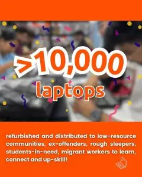
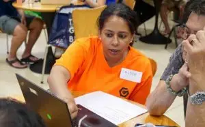
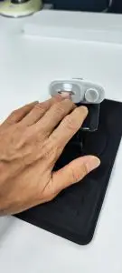
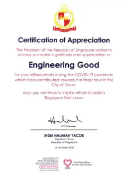
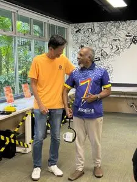
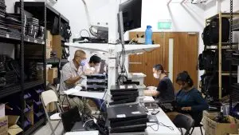
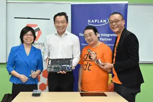

Stories
Life of CEO kitty, happenings at EG, and more.
The New Dimension of Singapore’s Digital Divide
October 31, 2025 No CommentsPicture this: a young girl lies on the floor of her family’s one-room rental flat, eyes fixed on a glowing hand-me-down tablet, lost in the
Read more about The New Dimension of Singapore’s Digital Divide
10,000 refurbished laptops distributed!
June 7, 2025 No CommentsAchievement Unlocked: Level 10,000!!! Back in 2020, when COVID struck and the world went full “work from home” mode, laptops suddenly became hotter than graphics
Read more about 10,000 refurbished laptops distributed!
Digital Literacy – Improving job prospects for the disadvantaged
April 14, 2025 No CommentsAt Engineering Good, we’re all about closing that digital gap—because in this day and age, not knowing how to use a computer shouldn’t be what
Read more about Digital Literacy – Improving job prospects for the disadvantaged
AT for Stroke Survivors: One-hand operated Nail Trimmer
November 5, 2024 No CommentsDIY Assistive Technology: A Nail Trimmer for Stroke Survivors Everyday tasks we take for granted, like cutting our nails, can become major hurdles for stroke
Read more about AT for Stroke Survivors: One-hand operated Nail Trimmer
Celebrating the Journey: The Impact of EG’s Refurbished Laptops Initiative
October 28, 2024 No CommentsBridging the Digital Divide It has been nearly 5 years since we started the initiative to refurbished laptops to support users from disadvantaged communities. In
Read more about Celebrating the Journey: The Impact of EG’s Refurbished Laptops Initiative
Tech For Good: Assistive Tech showcase at S3 World Stroke Day Open House
October 25, 2024 No CommentsEngineering Good showcased our range of Assistive Tech at the Stroke Support Station (S3) World Stroke Day Open House held at Enabling Village. People who
Read more about Tech For Good: Assistive Tech showcase at S3 World Stroke Day Open House
Assistive Technology Helps Remove Barriers
September 24, 2024 No CommentsWhat is Assistive Technology Assistive technology (AT) refers to products, devices, equipment, software, systems, or services designed to improve learning, work, and daily living for
Read more about Assistive Technology Helps Remove Barriers
E-Waste in Singapore: 7 Ways to Reduce Trash and Donate
August 16, 2023 No CommentsReducing e-waste in Singapore Have you ever wondered where retired electronics go? Turns out, they’re not sunbathing on a tropical island. Singapore’s high-tech hustle comes
Read more about E-Waste in Singapore: 7 Ways to Reduce Trash and Donate
EG Newsletter: Impact Stories in June
August 8, 2023 No CommentsEngineering Good Mid-year fit check! While temperatures climbed up to 35 degrees Celsius, our engines were running hot too. June was a month of wholesome
Read more about EG Newsletter: Impact Stories in June